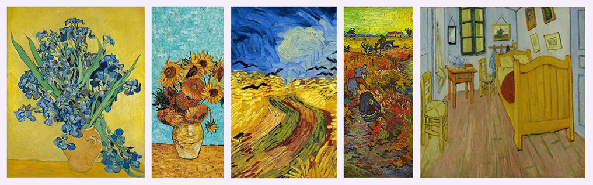

The Most Painter
The timeless art of Van Gogh

Vincent van Gogh, one of the most iconic figures in Western art, is best known for his expressive use of color and emotion. His most celebrated works include The Starry Night (1889), with its swirling night sky full of wonder Irises (1889), showing vibrant flowers in motion and Sunflowers (1888), a bold series radiating warmth and simplicity.
In The Bedroom (1888), he depicted his room in Arles with calm tones and strong outlines, offering insight into his personal world.
The Red Vineyard (1888), thought to be the only painting he sold during his life, holds special significance, while Wheatfield with Crows (1890), one of his final pieces, reflects his troubled mind through dark skies and ominous crows over a golden field.
"Tree Roots" (1890) is believed to be the last painting he worked on, based on location analysis and his final notes.